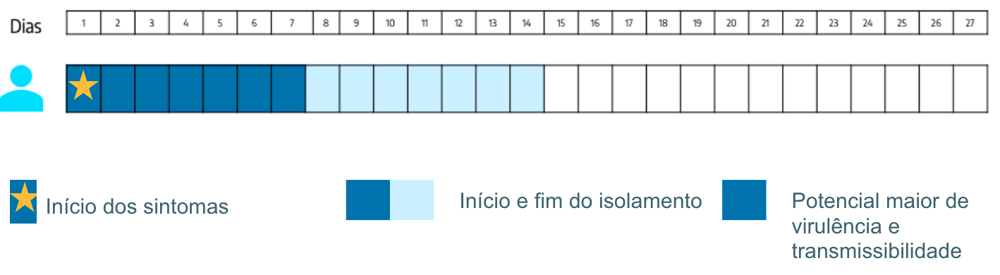
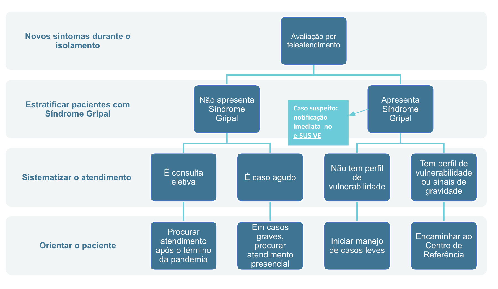

Módulo 2 | Manejo Clínico: Atenção Básica
COVID-19
Manejo da infecção causada pelo novo coronavírus
Aula 3
Como conduzir isolamento domiciliar
Essa é a Aula 3 do Módulo 2 do curso COVID-19 Fiocruz.
Nesta aula, vamos orientar os profissionais de saúde sobre como conduzir o isolamento domiciliar, incluindo condutas para evitar o contágio domiciliar, telemedicina e ações em caso de mudança no quadro do paciente.
Ao final, você vai ser capaz de:
- aplicar o protocolo de isolamento domiciliar e telemonitoramento preconizado pelo MS;
- realizar procedimentos de telemedicina, quando necessário.
Os materiais básicos de referência são os Protocolos de Manejo Clínico de COVID-19, preconizados pelo Ministério da Saúde.
Lembramos que as orientações e procedimentos em relação ao coronavírus estão em constante mudança, à medida que aprendemos mais sobre a doença.
Para se manter atualizado, consulte sempre os links e os materiais de apoio indicados neste curso.
O paciente em isolamento domiciliar
O isolamento domiciliar é uma medida chave na contenção da COVID-19. É uma das principais estratégias de mitigação da pandemia, já que é através dele que se impede a propagação da doença. Reduzir o tempo entre o início dos sintomas e o isolamento é vital, pois reduzirá a transmissão e provavelmente contribuirá para a desaceleração da pandemia.
Os casos leves podem ser acompanhadas completamente no âmbito da APS e por telemedicina.
Quem fica em isolamento
Pessoas com quadro clínico de Síndrome Gripal, apresentando sintomas leves, sem sinais de gravidade e com ausência de comorbidades que indiquem avaliação em centro de referência ou atenção especializada, são casos tratados como suspeitos de COVID-19 e devem ficar em isolamento.
A vigilância ativa e continuada dos pacientes de casos leves é a principal ferramenta para o manejo.
O manejo inclui o isolamento domiciliar por 14 dias, a contar da data de início dos sintomas. Durante esse período, as pessoas devem ser conduzidas com medidas não farmacológicas, como repouso, hidratação, alimentação adequada e o uso, quando necessário, de analgésicos e antitérmicos.
A equipe deve fazer contato com essas pessoas a cada 48 horas para rever o quadro sintomatológico - preferencialmente por teleatendimento.
Diante da possibilidade de Síndrome Gripal por outros vírus, como a Influenza, indica-se a utilização de medidas farmacológicas.
O isolamento inclui, também, a restrição de contatos domiciliares com o paciente de Síndrome Gripal, como medida de precaução do cuidador.
Quais as medidas de precaução no domicílio
| PARA O PACIENTE | PARA OS DEMAIS MORADORES SEM SINTOMAS |
|---|---|
|
O paciente em isolamento não deve receber visitas: deve permanecer em quarto isolado e bem ventilado. Caso não seja possível, deve ser mantida a distância mínima de um metro da pessoa sintomática e não se deve compartilhar materiais como copos, pratos, talheres, toalhas de rosto e banho, tampouco compartilhar a cama (puérperas que estejam amamentando devem continuar com a amamentação utilizando máscaras e medidas de higiene das mãos). |
Manter os cuidados padrão de lavar as mãos com frequência e, ao tossir ou espirrar, cobrir a boca e o nariz. Além disso, evitar o contato com as secreções do paciente. Limpar mais de uma vez por dia as superfícies comuns e os banheiros, preferencialmente com uma solução contendo alvejante (uma parte de alvejante para 99 partes de água). As roupas do paciente devem ser lavadas com sabão comum e água entre 60-90°C. |
Confira os demais cuidados domésticos para isolamento domiciliar.
| ISOLAMENTO DOMICILIAR – Cuidados domésticos | ||
|---|---|---|
| Isolamento do paciente | Precauções do cuidador | Precauções gerais |
|
|
|
Fonte: Protocolo de Manejo Clínico do Coronavírus na APS
O contato da equipe de saúde com o paciente deve ser realizado, no máximo, a cada 48 horas. Deve ocorrer preferencialmente por teleatendimento - caso não seja possível, recomenda-se que a equipe se desloque para visita domiciliar. Durante a visita deve ser utilizado EPI e tomadas medidas de prevenção de contágio. Para o acompanhamento do paciente em isolamento, é importante que a equipe da APS tenha os canais de contato não só do paciente, mas de todos da família ou mesmo de vizinhos.
É indicado realizar o teleatendimento, evitando que a pessoa com sintomas saia de casa.
Em caso de alteração no quadro e piora dos sintomas, essas pessoas devem ser orientadas a procurar o serviço de saúde para que sejam reavaliadas. Recomenda-se que a triagem e a classificação de risco dessas pessoas sejam realizadas preferencialmente por sistemas de teleatendimento.
Se mais alguém na mesma casa apresentar sintomas de SG, deverá ser avaliada de forma a reduzir o risco de contágio de outras pessoas.
Na hipótese de ser um novo caso diagnosticado como Síndrome Gripal leve, essa pessoa deverá estender o isolamento por mais 14 dias, a partir do início dos sintomas. A extensão de prazo só se aplica a quem apresentar sintomas: os demais residentes do domicílio, se assintomáticos, estarão liberados após o primeiro ciclo de 14 dias do isolamento. A equipe de saúde deverá realizar a notificação no e-SUS VE do novo caso de Síndrome Gripal.
Período de isolamento
Encerrando o isolamento
As pessoas devem continuar seguindo as orientações de isolamento social determinadas pelas autoridades locais, uma vez que não é possível ter certeza de que estão imunes contra a COVID-19 até que um teste laboratorial para a detecção de anticorpos seja realizado.
Telemedicina no manejo terapêutico da Covid-19
Em 20 de março de 2020 foi publicada a Portaria n°467, que autoriza as ações de telemedicina em caráter excepcional e temporário, com interação à distância. Essa medida faz parte das ações de enfrentamento à pandemia de COVID-19.
Ações de telemedicina podem ser úteis para o monitoramento e acompanhamento dos casos em isolamento domiciliar, assim como para a realização da triagem Fast-track sem necessidade de deslocamento do paciente.
As ações regulamentadas contemplam:
- atendimento pré-clínico
- suporte assistencial
- consultas e monitoramento
- diagnóstico realizados por meio de tecnologia da informação
- comunicação no âmbito do SUS.
Assim, o manejo clínico pode usar sistema de teleatendimento por telefone ou por vídeochamadas. Não é necessário gravar o atendimento, mas é preciso anotar as informações no prontuário clínico do paciente.
Durante o teleatendimento, anote no prontuário do paciente:
- dados clínicos necessários para a boa condução do caso;
- conduta adotada;
- orientações que foram repassadas ao paciente ou cuidador;
- data, hora, tecnologia da informação e comunicação utilizada para o atendimento;
- identificação profissional (número de inscrição no Conselho Profissional).
Como organizar o teleatendimento
Para organizar o teleatendimento, é necessário:
- número de telefone da UBS e/ou
- número de celular para mensagens (como WhatsApp, por exemplo)
- pessoa responsável pelas chamadas (atender o telefone e monitorar as mensagens).
A equipe de APS deve disponibilizar, além do número de contato da UBS, um canal de comunicação como número de telefone para ligação ou envio de mensagens por app (como WhatsApp). Um membro da equipe deve ficar destacado para atender o telefone e monitorar novas mensagens regularmente. Essa pessoa vai realizar a triagem, fornecer informações iniciais e, se for o caso, alertar a unidade sobre pessoas com sintomas mais graves.
O fluxo indicado para teleatendimento de pessoas em isolamento é:
O Dr. Vinicius Oliveira, médico sanitarista da Fiocruz, explica a importância da telemedicina no contexto da pandemia da COVID-19:
Ações de vigilância em saúde
Todo caso de Síndrome Gripal deve ser notificado no e-SUS VE (Vigilância Epidemiológica). Essa ação constitui uma medida de vigilância epidemiológica. Além disso, todas as informações dos pacientes com Síndrome Gripal devem ser registradas no prontuário para garantir a longitudinalidade e a coordenação do cuidado.
Tanto a notificação quanto o registro correto no prontuário permitem uma eventual investigação epidemiológica e formulação de políticas e estratégias de saúde.
Condução na APS
As primeira ações na APS são:
- Indicar o isolamento domiciliar, que deve durar no mínimo 14 dias;
- Realizar monitoramento clínico, por telemonitoramento e telemedicina a cada 48 horas.
Ao prescrever o isolamento familiar, é preciso avaliar a necessidade de encaminhamento ao serviço social para apoio adicional a famílias de alta vulnerabilidade.
Recomenda-se a aplicação de Escala de Risco Familiar (Coelho e Savassi, 2004) para identificar situações que irão necessitar de assistência social e saúde adicional.
As medidas de suporte e de prevenção consistem em:
- Suporte e alívio dos sintomas, com medidas farmacológicas e não farmacológicas;
- Redução de riscos relacionados ao Influenza para reduzir a possibilidade de complicações pela introdução precoce de antiviral, se indicado, e de imunização. Para isso, é preciso verificar situação vacinal para gripe (se faz parte do grupo de risco – gestante, crianças, puérperas e idosos) e vacinar se necessário.
Suporte, alívio de sintomas e prevenção
Confira o checklist das prescrições de cuidados no domicílio:
Prescrição de fármacos para o controle de sintomas, caso não haja nenhuma contraindicação, com possibilidade de intercalar os fármacos antitérmicos em casos de difícil controle da febre.
Opções terapêuticas recomendadas pelo Ministério da Saúde:
- Antitérmico: Paracetamol ou Dipirona
- Antiinflamatório: Ibuprofeno
Introduzir imediatamente Oseltamivir se há risco de complicações. Ajuste a dose de acordo com peso/idade, e para pacientes renais crônicos, de acordo com o Protocolo de Manejo na APS.
Contactantes vulneráveis devem ser orientados a se vacinarem contra Influenza.
Chegamos ao fim da aula
Você terminou a Aula 2 do Módulo 2 do curso COVID-19
Nessa aula, você viu o papel das Unidades Básicas de Saúde; o manejo diagnóstico e terapêutico de pessoas com suspeita de infecção respiratória caracterizada como Síndrome Gripal; e como organizar UBS para a demanda de Atenção durante a pandemia de COVID-19.
Na próxima aula, vamos falar sobre o isolamento domiciliar.
Siga em frente!
E lembre-se de sempre consultar a versão mais atualizada dos protocolos, na página do Ministério da Saúde.